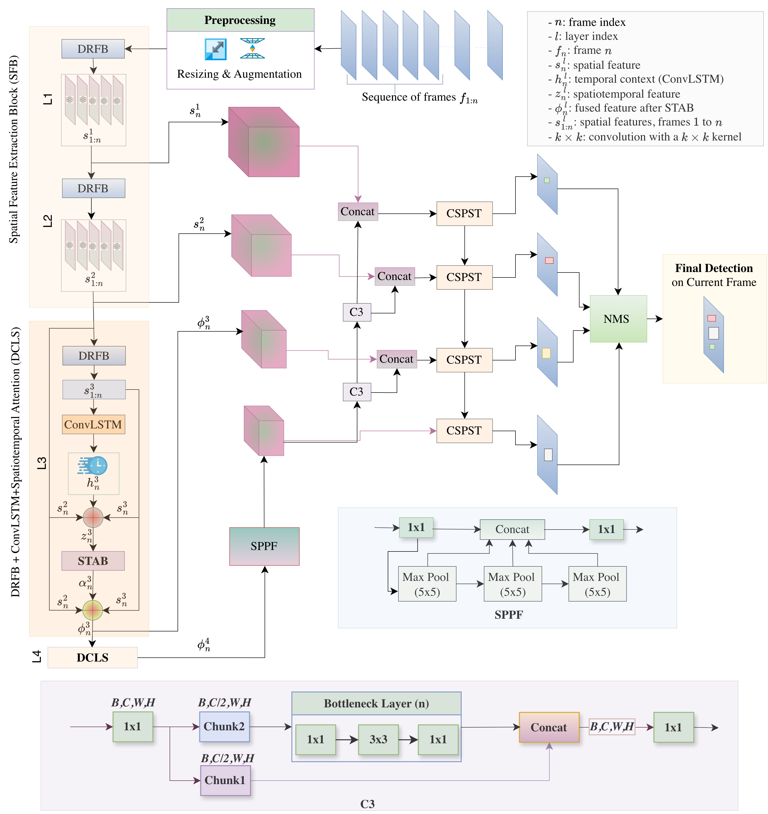

Computer vision · Detection
STARD-Net
Abstract. Detecting small airborne objects from a moving UAV is difficult because targets occupy few pixels and are easily confused with clutter, camera motion, camouflage, or partial occlusion. STARD-Net addresses this setting with a spatiotemporal architecture that refines weak visual evidence using attention, residual and dilated feature extraction, and temporal context. The work focuses on preserving target evidence across frames rather than treating each image independently, providing a structured approach to reliable small-object detection in dynamic aerial scenes.